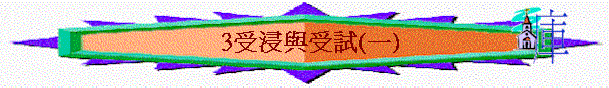

教師版
第三課：受浸與受試（上）
引言：施浸約翰是父 神所用的見證人，他的出生明顯是要為主耶穌作預備的工作，他是主耶穌的先鋒，他的出現帶來整體猶太地的震動，也成了主耶穌要出來作工的信號。但是主耶穌沒有立刻開始作傳道工作，因主耶穌一生是按著父 神的心意而活，沒有一點要顯露祂自己的心。但祂不是以神蹟奇事來引起人對祂的注意，反倒是隱藏著到到約但河去接受施浸約翰的浸禮，接著又到曠野去忍受魔鬼的試探，顯明祂是以既謙卑又尊榮的態度來開始並完成祂的使命，為跟隨祂的人留下了榜樣及腳縱。
Ａ）主耶穌受浸：
主耶穌無聲無息的隱藏了多個歲月後，終於在父 神所定的時候出來，要顯明在以色列人的面前。為何祂要來接受人（施浸約翰）的浸禮呢？當中有何含意及教訓呢？
１）約翰的浸禮
在舊約中，洗濯是親近 神之時一個重要的禮儀，在以色列人漫長的歲月中漸演變出眾多形式的洗濯條例，但所象徵的意義卻是相同，都是為了表明悔罪與更新。根據約翰自己的話，他的浸禮是「悔改的浸禮」，參太三：１１，目的是為要來的彌賽亞預備人心。他坦言其工作不過是暫時的，更大的是要待彌賽亞到來用聖靈與火給人施浸，也惟有彌賽亞的來臨才可以真正的使人內心有永遠的改變，參太三：１１—１２
。
因著聽道而悔改的人太多，而他又在約但河邊講道，所以約翰就在河裡為悔改的人施浸。主耶穌就在此時無聲無息的隨著眾人前行到約翰面前，要受約翰的浸禮，但施浸約翰卻認出這位雜在眾人當中的是與別不同的一位，甚至約翰驚訝這位人子是那麼完美無瑕，以至他不敢伸手為他施浸，反以自己當受主耶穌為他施浸，參太三：１３—１４
。主耶穌的品性及生活是那麼完美，以至祂的尊貴被認出來。我們的品性能否顯露出主的榮美呢？我們的生活能否無虧於人呢？
另方面，父 神指示他，聖靈要降下在誰身上，那位就是要用聖靈施浸的人（即彌賽亞），他的施浸為要使彌賽亞給顯明出來，好使他可以為彌賽亞作見證，故主耶穌受浸時的奇景使他認出這位眼前的人子就是期待已久的彌賽亞。
２）主受浸原因
主耶穌是沒有罪的，為何祂要受這悔改的浸禮呢？祂的尊貴既使施浸約翰自覺連提鞋或解鞋帶也不配的，參太三：１１、約一：２７。為何祂不容施浸約翰不為祂施浸呢？
ａ）對工作而言
ｉ）在舊約時，在會幕或聖殿中的事奉 神的人，在正式開始事奉之先，必須先有行潔淨禮。主在開始以 神兒子的身份事奉之先，亦以藉浸禮開始，象徵自己分別為聖的心意，從此以後將自己獻給 神，完全的被 神使用。
ｉｉ）主耶穌是以「人的代表」之身份而受浸，祂雖沒有罪，但是祂代表的人卻都是罪人，故主耶穌在工作之先，首先代表世人向 神認罪悔改。
ｉｉｉ）表示這位無罪的主耶穌願與罪中受苦的人聯合，如同罪人一般地活在罪人中間，但祂的目的是要救他們脫離罪，叫他們因認識祂得稱為義，參賽五十三：１１。這浸禮在意義上成了主耶穌對人的承諾及預言。因為十字架是另一個「浸禮」，主耶穌現今與眾人一同進到約但河中受浸，但到了父 神所定的時候，無罪的主耶穌要代表人在十字架上進入那那死亡之河中，為要除掉罪及成全義。這是主耶穌接受浸禮最重要的意義！我們體會當中的恩情嗎？
ｉｖ）主耶穌顯明了人對禮儀當有的正確心態，過份的重視只演變成無知的迷信，過份的輕忽卻失卻了 神更深的祝福。禮儀雖是外表的形式，但卻是有它象徵的意義，若與真理的內容相結合，就能帶出完美的效果及見證來。正如主耶穌是謙卑的，因著受浸就更把祂的謙卑更明顯的見證在眾人面前了。
ｂ）對約翰而言
主耶穌尊重施浸約翰先知的職份，有承認他有從 神而來的權柄，當主耶穌還未顯明是 神的兒子之時，祂還是服在先知的手下受浸，這給與我們對權柄的尊重當有確的學習。另方面，主耶穌的受浸是成全約翰先知的工作，因他是主耶穌的先鋒，他必須知道誰是彌賽亞才可以為祂作見證，故在此次浸禮中，父 神把主耶穌顯明出來，使約翰認識祂就是要來的救主。故他認識主的身份後，他的工作便轉向指導人走向主，甚至自己的門徒也轉介跟從主，約一：３５—３７。
ｃ）對自己而言
主耶穌受浸時所發生的事，與祂日後的工作態度能力有相關的，首先是要在工作和為人上盡諸般的義，作到無瑕無疵的地步，在遵行 神一切的吩咐上顯明祂為義，申六：２５，以至祂在救贖人的工作上合乎資格。聖靈降臨在祂身上是表示祂是倚靠聖靈的大能來作成 神的工，向世人見證祂是「基督」，要用「聖靈施浸」，使人重生而得進 神國。當主耶穌禱告之時，天便開了，有聖父的見證（用聲音）及聖靈的見證（如鴿子降下），表示出主尊貴的身份，亦表示三一 神同心要將救恩賜給人。
Ｂ）主耶穌受試：受浸後首件事不是四處宣告祂為 神的兒子，而是受魔鬼的試探，何解呢？
１）受試的原因
主耶穌是真 神又是真人，按著祂的 神性，祂是不能被試探的，參雅一：１３。因為 神是不能死也不會死，主耶穌若要成全救贖的工作，祂必成為與一樣才可有資格來代贖。馬太福音及路加福音兩卷書論及主耶穌受試，分別論及祂為王及人子的身份，而馬可福音因論及主為 神的僕人故多記祂作 神工作的事情，而約翰福音是論及主耶穌是 神的兒子，故沒有記錄受試。
ａ）為人的考驗
主耶穌要來救贖人是要站在人的地位上，要顯明人是可以順服 神得勝魔鬼，人犯罪是因人違背 神的話。另方面，祂受魔鬼試探也使魔鬼對祂的救贖無可推諉，證明主耶穌是真正的人，祂是真正的義人，並且主耶穌代表人來得勝魔鬼。
|
首先的亞當 |
末後的亞當（耶穌基督） |
|
在不缺乏食物的樂園中貪食犯罪 |
在饑餓及缺乏食物的曠野中得勝 |
|
輕忽 神的話及因食物違犯 神 |
以 神的話為食物並重看及倚靠 神的話 |
|
失去王權而使世人因他而墮落 |
恢復王權而使信者因祂蒙福承受永生 |
|
引入撒但而把樂園變成了荒野 |
依靠 神的話勝過撒但並把曠野恢復成樂園 |
學生版
第三課：受浸與受試（上）
Ａ）主耶穌受浸：
主耶穌經過了隱藏的歲月後，在父 神所定的日子要顯明在以色列人面前，但為何祂出來作工不是以神蹟奇事來吸引人注意，乃是仍然的隱藏著到來受約翰的浸呢？
１）約翰的浸禮
是悔改的洗禮，為彌賽亞預備人心。他的工作不過是暫時的，惟有彌賽亞的來臨才可以真正的使人內心有永遠的改變，他在看見主耶穌時本是不敢為主施浸的，為何呢？因約實在覺察到他眼前的人子為特別的一位，因主耶穌的要求而為祂施浸。就在此時，他因 神的指引而得知主耶穌就是彌賽亞。
２）受浸的原因：主耶穌是沒有罪的，為何祂要受浸呢？
ａ）對工作而言
ｉ）在舊約時，在會幕或聖殿中的事奉神的人，在正式開始事奉之先，必須先有行潔淨禮。主在開始以神兒子的身份事奉之先，亦以藉浸禮開始，象徵自己分別為聖的心 意，從此以後將自己獻給神。
ｉｉ）主耶穌是以「人的代表」之身份而受浸，祂雖沒有罪，但因祂所代表的人卻都是罪人，故主耶穌在工作之先，首先代表世人向神認罪悔改。
ｉｉｉ）表示主耶穌願如同罪人一般地活在罪人中間。
ｉｖ）顯明對禮儀當有準確的看法。
ｂ）對約翰而言：他是主耶穌的先鋒，他必須知道誰是彌賽亞才可以為祂作見證，故父 神要藉他用浸禮將主耶穌顯明出來。當他認識主的身份後，他的工作是指導人走向主。
ｃ）對自己而言
ｉ）祂要在工作和為人上盡諸般的義，作到無瑕無疵的地步，在遵行神一切的吩咐上顯為義，申六：25。
ｉｉ）主耶穌受浸時，有聖父及聖靈的見證，表示出主的身份，見證出三一神同心要將救恩賜給人。
Ｂ）主耶穌受試
１）受試的原因
ａ）為人的試驗
首先的亞當是站在人類之元首的地位受試驗而失敗，故成了肉身來之人子，這末後的亞當也必須站在人的地位上受試驗。因為舊的元首受試探失敗在魔鬼手裡，這新的元首必須受魔鬼試探而得勝，才能挽回人的地位。
|
首先的亞當 |
末後的亞當（耶穌基督） |
|
在不缺乏食物的樂園中貪食犯罪 |
在饑餓及缺乏食物的曠野中得勝 |
|
輕忽 神的話及因食物違犯 神 |
以 神的話為食物並重看及倚靠 神的話 |
|
失去王權而使世人因他而墮落 |
恢復王權而使信者因祂蒙福承受永生 |
|
引入撒但而把樂園變成了荒野 |
依靠 神的話勝過撒但並把曠野恢復成樂園 |